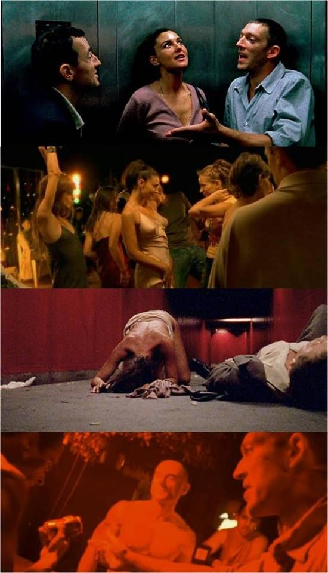

s
Le Temps
Quiero hablar de una película bastante perturbadora,
que vi hace un tiempo y que me parece oportuna para
tener ataques de pánico durante la cuarentena.
Irreversible es una película de Gaspar Noé un increíble director Argentino, lo que no sorprende porque los
argentinos definitivamente tienen una magia para el arte cinematográfico gigantesca. Gaspar Noé este director provocador, lo descubrí viendo
“Enter The Void" otra peli increíble de la que quiero hablar después, vi "Enter The Void" , luego "LOVE" que por cierto esta en Netflix, me obsesioné un poco y decidí ahondar más en la filmografía de Noé, así llegué a Irreversible.